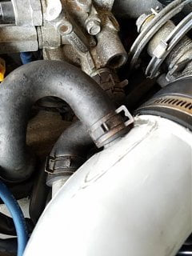
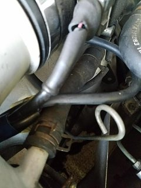
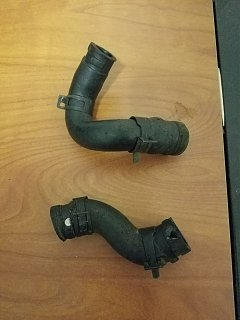

-
Ive been trying to replace my Vacuum lines on my STOCK NA 1984 Z31, these overly thick and inflexible hoses that run from the intake tube just before the throttle body aren't mentioned in any of the vacuum overhaul guides i have been following ( http://www.thumper300zx.com/z31/vacuum/vacuum.htm ) and something that perplexes me more is that one of the hoses seems to be two different sizes on each end, i think one of these is the oil relief but im not entirely sure, there is a 3rd line that runs behind the tube that i also dont know anything about. where can i find replacements for these pipes and what do they even do? ive been googling for hours now and i made an account just to post this in vein that i might find a clue.   -
The one running to your valve cover is a crankcase vent, the one running to your intake is for the idle air components. The one running beneath the throttle body I am not sure about. I replaced the idle air hose on my Z31 with regular vacuum hose from a car parts store… it took some stretching around the end to make it work, but it does. You may have to do the same thing for the crankcase vent hose, as I doubt those hoses are available anymore.1985 300ZX Z31 2+2 VG33ET (running!) -
The one running beneath the throttle body goes around via a hardline to the IACV on the passenger side of the plenum, just forward of the EGR.
84 AE/Shiro #683/Shiro #820/84 Turbo -
Steve Berman over at www.300zxpartsforyou.com usually has these in his stock. probably the best source you're going to find. get with him if you need them. if he doesn't have them, its likely he will in the future since he is always pulling parts.Originally posted by killmeplease View Post
Bon
-
Thanks guys, might be more posts from me in the future, this is my first Z and my first time working on cars, does anyone know if I can substitute the crank pipe with some sort of softer silicon tubing that will allow me to strentch it over? The fact that it's much larger one one end makes it kinda annoying to find a simple replacement.Last edited by killmeplease; 09-30-2017, 05:50 AM. -
which pipe/hose are you talking about? did you go to that website and see if the hose available?
-
The one that goes from the crank vent to the intake, also the website says that whoever runs it will be closing it for a month. -
yeah, looks like he's going on vacation. he does that. but he runs his site and parts wear house day in a day out, so he needs a break sometimes. unfortunately its when you are in need of a part. now that having been said, he does have the hose you're looking for.... 17 bucks plus shipping. its on page 75 part# HAIL-38-71
you're just going to have to wait until he gets back. you can also check on ebay. you can also use any solid hose that you can get to fit… my car had a hose from a Merecedes bienz. worked okay.
just send him an email and have your pay pal payment ready or you can call him with CC info when he returns. he does good business and is quick to respond. I just ordered a entire front bumper from him last week and it's coming to me overseas. I've dealt with him for several years now and I can say he's pretty solid. my # 1 source for used Z31 parts.
also, for outstanding reference, head over to www.xenonzcar.com and read up on the Z31 section. much to learn. also download the free FSM for your year car. another great book to know inside and out… will help you in working and understanding your car. good luck
BonLast edited by bonfire79; 09-30-2017, 08:11 AM. -
I got the PCV Hose from Nissan I don't see why Nissan wouldn't have the other hoses. A lot of parts are NLA, but most of the hoses are still available like the radiator hoses and PCV Hose. -
I don't know about Steve Berman. I needed a replacement door handle for an 85 Turbo (has the black trim), and he sent me one for an 84 (silver trim) he advertised in good condition. It was a complete mess. He gave me a refund for it, but I don't know if I'd buy from him again. -
Im sure the man is reputable but my thought process right now is why would i spend money on an OEM rubber hose from almost 35 years ago that's either cracked or about to crack any day now… -
Your reasoning is not without merit. You should buy OEM or from a reputable source or vendor. I think one of the hoses you're looking for is the HOSE-THROTTLE CHAMBER TO 3 WAY CONNECTOR Nissan Part No. 11827-02P01.
278_Z31_0000000023.jpg -
I understand your thoughts on that. I think hoses are the exception as they get bridle, worn, torn, and become hard and crack; so getting those items new makes sense. however, there is going to come a time when you need a part that is no longer made by Nissan and discontinued and you won't be able to find a new OEM spec part anywhere… trust me on that. That bumper that I mentioned before… Can't get that new as it is no longer made. But that type of part is fine used since its not going to tear, crack, or blow under pressure like say an old hose. most of the used parts that I got from Mr. Berman were because it was the only choice and it was available, even if used. its no different than pulling a part from a junk yard. I have replaced countless parts for my car since 2012 that were used and they work fine. better than not working at all. that being said, if you can get things new and they are readily available and affordable, go for it. most parts from 300zxpartsforyou are hard to find parts, no longer made parts like interior pieces and hardware… you know, things that can last years and years if not neglected or intentionally broken. Honestly, I don't know what I would do if Steve wasn't around.Originally posted by killmeplease View Post
by the way, the hose you're looking for is available here: https://www.nissanpartsdeal.com/part…ntilation.html
16 bucks. make sure you get the one for the NA and not turbo. they are different. and you will see the NA is half the cost.
usually the places I check first for new parts is www.nissanpartsdeal.com as they still have many new parts available. the second place I go is www.rockauto.com as they have a good selection of quality new parts for the Z. for other parts hard to find or NLA new, I go to 300zxpartforyou, followed by ebay, craigslist, and others.
I usually don't go to courtesy Nissan anymore. they don't seem to carry hardly anything it seems, and if they do, its outrageously expensive. here's an example: I need a new weather strip rubber seal that goes around the door frame and T-top frame. its just a rubber seal. last I checked it was $500. let me repeat that… FIVE HUNDRED DOLLARS!
hope you can get your parts.
Cheers,
Bon
-
sorry to hear that it didn't work out well for you in this case. the only time I had issues with a part from him was a hose I got was hard and unusable and a plastic interior piece had been cracked during shipping. and he just sent me another one. most parts I get are always packaged nice and secure. I usually don't have problems. like I told the OP, I have been going through 300zxparts.com a lot since I got my car in 2012 and I don't know where I'd be if that site wasn't around, especially since I'm not located in the U.S. right now, so that make it even harder to get parts.Originally posted by daniel_pearce View Post
Bon
-
I am able to get most parts from the dealer except certain things e.g., Idle Air Control Valve (IACV), speedometer-pinion cable or the seal kit, license-lamp, factory turbo spoiler, etc, etc. When I did the timing belt on the white 84 Turbo, I got all the timing belt components from Nissan except for the water pump and thermostat which were NLA. I had to get the thermostat and water pump from Rock Auto. However, Rock Auto had a huge Z31 liquidation not long ago, so I am not sure how many parts they have left. Other items I've found locally or on Ebay, but it is growing increasingly difficult to source good parts.
It's really a shame because there is a huge sub-culture for Ford Mustangs and early Datsuns. The Z31 was ranted and raved over when it first launched, but now it's largely been forgotten by Nissan and has little OEM and aftermarket support. You'd think a being the first V6 and being mass produced (over 74,000 units) in 1984 would have earned a reputation large enough for support. To me the Z31 is the perfect blend of style and performance. When you get looks from guys in Porches, Ferrari's and Corvettes, you know you have a pretty cool car.-
 #15.1Dunkine commentedDefinitely a double edge sword, on one hand it's awesome to have a truly unique car (at least around my area, almost no other Z's), but sucks parts & culture wise. I'm hoping between my daily drivers and the "show" Z I'm going to build out of my 85 we can get some of these younger "civic" guys to get the Z bug.
#15.1Dunkine commentedDefinitely a double edge sword, on one hand it's awesome to have a truly unique car (at least around my area, almost no other Z's), but sucks parts & culture wise. I'm hoping between my daily drivers and the "show" Z I'm going to build out of my 85 we can get some of these younger "civic" guys to get the Z bug.
-

Copyright © 2006–. All rights reserved. Privacy Policy
Comment